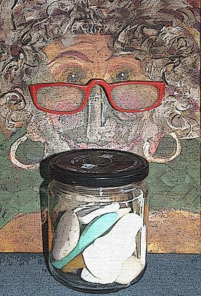

My grandma kept her soap sealed in a jar
beside the sink, soap whiter than the white
of Ajaxed porcelain, each scented bar
imprinted with a dove. My jaw grew tight
the day my mother told me how her mother,
seething, chased her round the house and made
her wash her mouth. Eyes shut, I tried to blur
the scene inside my mind: it would not fade.
No matter how I scrub, the stain is there:
a foul release, an s-word slithering out,
and I’m left standing in the perfumed air.
The jar is open. A young girl’s awful shout
is stifled in a mouth stuffed full of Dove,
and still my tongue tastes hate for one I love.

Couplets for a Young Carpenter
Swinging a ball-peen in that early year,
you incorrectly chose the hemisphere-
shaped head to drive a rusty nail clean through
a board. Persistence left your finger blue.
Hammering out these lines, now twenty-eight,
I sense you in my hands and hesitate:
a touch of you remains, still pounding out
your future awkwardly, without a doubt,
in thrall to the hammer’s momentary thunder.
And oh, my wide-eyed builder, how we blunder
through it, improvising as we go —
persistently, blow by glancing blow.
Under the Eaves
At dusk, a storm-tossed spider clings
to rigging of concentric rings
as the wind picks up the rain-jeweled strands
and shakes her web with a million hands,
and though her raindrop-planets sway,
she holds the center of the fray
and somehow snags an errant fly
who sails into her steadfast eye
and struggles as the dying light
spins vast entanglements of night.
Austin MacRae’s poetry has appeared or is forthcoming in Measure, The Formalist, Blue Unicorn, The Raintown Review, Pivot, The Lyric, Re-Visions, Red Jacket, 14 by 14, and the anthology Sonnets: 150 Contemporary Sonnets (Evansville, 2005). He has published two chapbook collections of poetry, The Second Rose (FootHills Publishing, 2002) and Graceways (Modern Metrics, 2008).